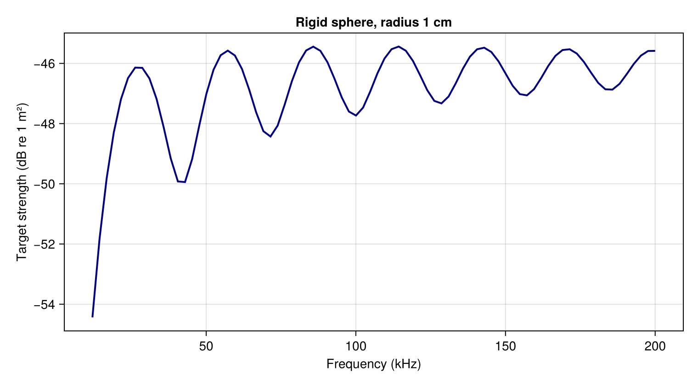

Visualization Gallery
The figures below are generated by executable tutorial blocks. Their source is on the linked page. Rebuilding the docs regenerates the images.
1D curves

Frequency-sweep source and CSV. Exterior sound speed is 1477.4 m/s, and the vertical axis is dB re 1 m². No angular variation is needed for sphere backscatter.

Incidence example source. Cylinder radius is 1 cm, length 7 cm, and frequency 12 kHz in a 1477.4 m/s exterior fluid. The model omits cap scattering, so its near-end-on behavior is not a closed-cylinder accuracy benchmark.
2D scattering patterns
Package bistatic plotting recipes are under active development. The distinction between incidence and observation directions is documented in Conventions. A gallery example will be added once the recipe and observation-coordinate behavior have been validated.
3D geometry, mesh, and field views
Mesh and field plotting examples will follow the package visualization implementation. Geometry and incidence already demonstrates constructing a Mesh. A meridian curve alone is not a 3D rendered surface. Field plots also require a solver that retains the relevant field, which ordinary radial/meridian FEM currently does not.